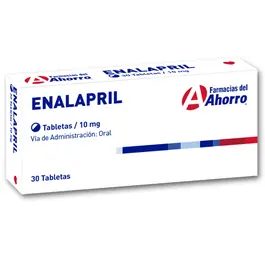
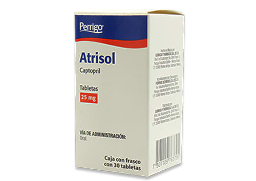

Mecanismo de Acción
Inhibición de la Enzima Convertidora de Angiotensina (ECA): Los IECA bloquean la acción de la ECA, una enzima que convierte la angiotensina I (inactiva) en angiotensina II (activa). La angiotensina II es un potente vasoconstrictor que aumenta la presión arterial. Al inhibir la ECA, se reduce la producción de angiotensina II, lo que lleva a una vasodilatación y una disminución de la presión arterial
Aumento de los Niveles de Bradicinina: La ECA también degrada la bradicinina, un péptido que causa vasodilatación. Al inhibir la ECA, los niveles de bradicinina aumentan, contribuyendo aún más a la vasodilatación
Reducción de la Secreción de Aldosterona: La angiotensina II estimula la liberación de aldosterona, una hormona que promueve la retención de sodio y agua. Al reducir los niveles de angiotensina II, los IECA disminuyen la secreción de aldosterona, lo que ayuda a reducir la retención de líquidos y la presión arterial.
Hipertensión arterial esencial (de primera línea, especialmente en jóvenes).
Insuficiencia cardíaca (disminuyen la poscarga y la remodelación cardíaca).
Infarto agudo de miocardio (post-IAM para mejorar la función ventricular).
Nefropatía diabética (protegen el riñón al disminuir la presión intraglomerular).
Embarazo: Los IECA están contraindicados durante el embarazo debido al riesgo de teratogenicidad y daño renal en el feto.
Angioedema: Historia de angioedema relacionado con el uso de IECA o angioedema hereditario/idiopático.
Insuficiencia Renal Grave: Pacientes con estenosis bilateral de la arteria renal o estenosis de la arteria de un riñón único.
Hipersensibilidad: Reacción alérgica previa a cualquier IECA
Tabletas/vía oral
Enalapril
La dosis de enalapril en hipertensión esencial varía de 10 a 40 mg diarios, con una recomendación inicial de 10 mg para casos leves y 20 mg para moderados o severos. La dosis de mantenimiento habitual es 20 mg una vez al día, ajustable hasta 40 mg si es necesario. En hipertensión renovascular, se recomienda iniciar con 5 mg o menos, ajustando según la respuesta del paciente. En pacientes tratados con diuréticos, se aconseja suspenderlos 2-3 días antes de comenzar el enalapril para prevenir hipotensión, o iniciar con una dosis baja (≤5 mg) si no es posible la suspensión.
Para insuficiencia cardíaca, se sugiere una dosis inicial de 2.5 mg bajo supervisión médica, incrementándose progresivamente hasta 20 mg diarios en una o dos dosis en 2 a 4 semanas, según la tolerabilidad.
Captopril
El captopril se administra por vía oral, con una dosis inicial de 50 mg diarios, en una sola toma o dividida en dos. Si no hay una reducción adecuada de la presión arterial en 2 a 4 semanas, se puede aumentar a 100 mg/día. Si es necesario, se puede agregar un diurético tras dos semanas adicionales. En casos de hipertensión severa, pueden requerirse dosis mayores, pero no deben exceder 450 mg/día. Para hipertensión maligna, especialmente en pacientes que no responden a tratamientos convencionales, se puede incrementar hasta el límite máximo. En insuficiencia cardíaca, el tratamiento debe comenzar bajo vigilancia médica con 25 mg, dos o tres veces al día. Si no hay mejoría después de dos semanas, se puede aumentar a 50 mg, con una dosis máxima recomendada de 150 mg/día. En niños, la dosis inicial es 0.3 mg/kg, reduciéndose a 0.15 mg/kg en aquellos tratados con diuréticos, administrándose en 3 tomas diarias. La dosis total máxima es 6.0 mg/kg/día, con ajustes necesarios en pacientes con insuficiencia renal. En pacientes con daño renal, una vez logrado el efecto terapéutico, se debe reducir la dosis o aumentar los intervalos entre administraciones. Se recomienda el uso de furosemida en lugar de diuréticos tiazídicos en estos casos.
Enalapril (Marca BLOCATRIL) Lisinopril (Marca ALFAKEN) Captopril (Marca ATRISOL) Ramipril (Marca RAMACE
Los efectos adversos más comunes incluyen mareo, cefalea, astenia, hipotensión, náuseas, diarrea, calambres, erupción cutánea, deterioro del sentido del gusto y tos, y con menor frecuencia disfunción renal e insuficiencia renal. Algunos efectos adversos menos frecuentes son edema angioneurótico, infarto del miocardio y accidente cerebrovascular posiblemente secundarios a hipotensión, pancreatitis, hepatitis hepatocelular o colestática, ictericia, dispepsia, dolor abdominal, estreñimiento, broncospasmo, disnea, diaforesis, dermatitis exfoliativa, síndrome de Stevens-Johnson, impotencia y glositis. No produce carcinogénesis o mutagénesis.